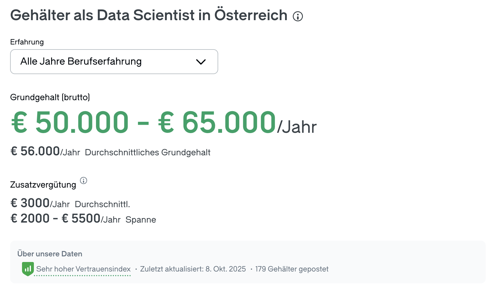
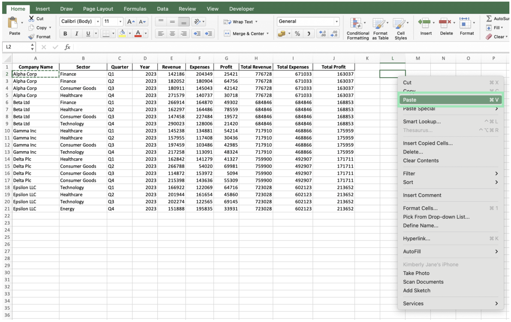
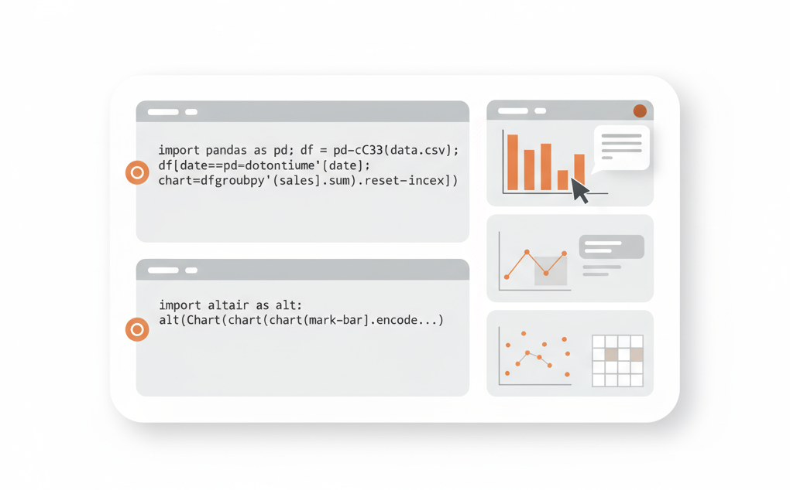
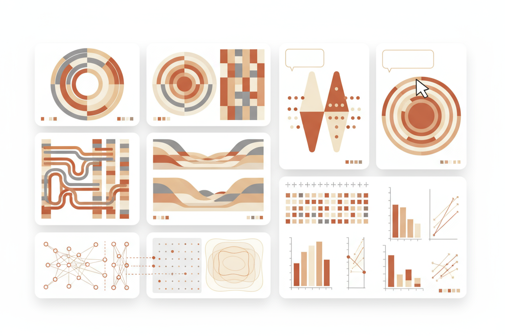
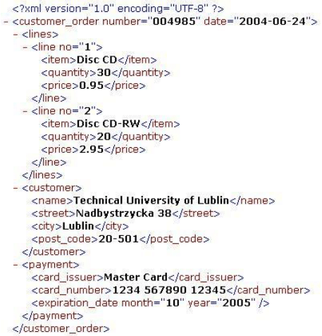
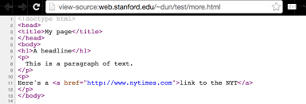
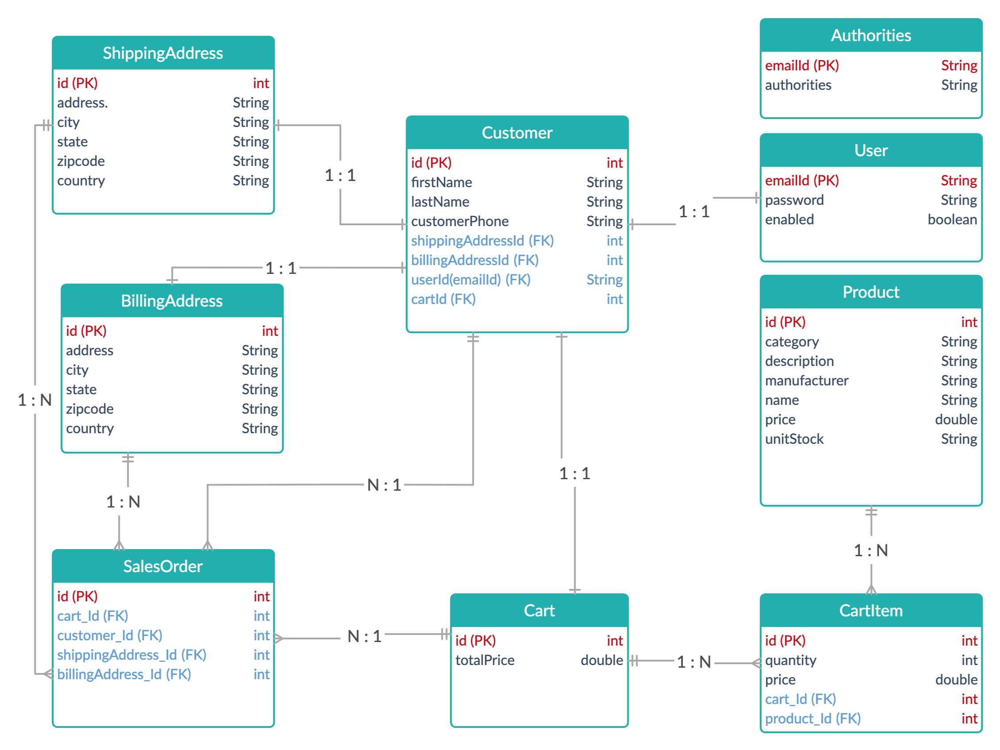

Zielsetzung des Kurses
Studierende sollen befähigt werden, Rohdaten in saubere Analysen, klare Visualisierungen und belastbare Erkenntnisse umzusetzen, um Annahmen zu prüfen und bessere Entscheidungen zu treffen.
Motivation
Motivation #1
Motivation #2: Unabhängigkeit
- Aufstiegs-, Wechselchancen, Branchenmobilität
- Operative Unabhängigkeit innerhalb der Organisation
- Flexibilität in der Arbeitsweise: Remote/projektbasiertes Arbeiten
- Möglichkeit zu Nebentätigkeiten/Selbstständigkeit
Motivation #3: Erkenntnis
Dialog
Interaktivität
Gruppenarbeit
Übungsgruppen
- 10 Gruppen zu 4 Personen
- Gruppenslots ab morgen in Moodle belegbar
Inhalte
- Grundlagen der Datenanalyse und Excel
- Datenbanken und SQL
- Datenanalyse mit Python
- Datenvisualisierung
- Statistische Methoden und AI
Grundlagen der Datenanalyse und Excel
Datenbanken und SQL

Datenanalyse mit Python
Datenvisualisierung
Statistische Methoden und AI

Über mich
- TU Wien (Informatik), WU Wien (BWL)
- Columbia University (Machine Learning)
- Investment Bank, Hedge Fonds (London)
- Asset Management (Wien)
- Steuerberatung & Datenanalyse-Agentur (Wien)
Über euch
Skalenniveaus (nach S. Stephens)
-
Nominal: Kategorien ohne Ordnungsrelation
- Beispiele: Geschlecht, Nationalität
-
Ordinal: + Ordnungsrelation
- Beispiele: Schulnoten, Rangordnung
-
Intervall: + (konstante) Abstände
- Beispiele: Temperatur in Celsius, Datum
-
Verhältnis: + absoluten Nullpunkt
- Beispiele: Gewicht, Einkommen
Arten von Daten
Tabellarische Daten
-
Definition und Struktur:
- Eine Zeile = eine Beobachtung
- Spalten = unterschiedliche Attribute der Beobachtung
-
Typische Operationen:
- Filtern, Sortieren, Gruppieren, Aggregieren (Summe, Mittelwert)
-
Dateiformate:
- .csv, .tsv, .txt., .xlsx
-
Tools:
- Excel/Sheets, Python
Tabellarische Daten (CSV-Datei)

Semi-strukturierte Daten
-
Definition und Struktur:
- Selbst-beschreibende Dokumente mit Schemadefinition
-
Typische Operationen:
- Einlesen, Validieren, Bearbeiten (Transformieren, Darstellen)
-
Dateiformate:
- .json, .xml, .html, .yaml
-
Tools:
- Formatspezifische Tools
Semi-strukturierte Daten (XML)
Semi-strukturierte Daten (HTML)
Bilddaten
-
Definition und Struktur:
- Pixelbasiert: 2D-Array von Pixeln (H×B×F)
- Vektorbasiert: Vektorobjekte (z.B. SVG)
- Metadaten: (z.B. EXIF-Daten)
-
Dateiformate:
- .jpg, .png, .gif, .svg
-
Tools:
- Browser, Photoshop, GIMP, Inkscape
Komponenten einer Datenbank

Entity-Relationship Diagramm
Architektur einer Webapplikation

Fragen?
Nächste Schritte
- Gruppenslots in Moodle buchen
- Folien & Materialien auf Moodle (1 Woche vor nächster Einheit)